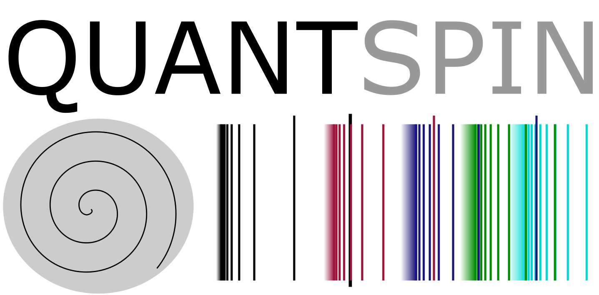

Starting a theme that would continue to be followed down the line, ever since I first became enamored with the theory of statistical signal processing,
I studied algorithms that help detect disease. I've been privileged enough to contribute to the pursuit over the course of my industrial career,
particularly in applying Deep Learning techniques to the fields of Radiology, Oncology, and Ophthalmology.
When a goal is this far-reaching, it's vital to keep in mind various paths to the ultimate end.
Precise and non-invasive detection of malignancies in human tissue is a vital goal of any medical research.
Optical methods, such as vibrational / Raman spectroscopy, have all been extensively investigated as ways to reach this goal.

My current research spreads over the intersection of machine learning, embedded systems, photonics and artificial intelligence.
Investigating the interaction of photons with a phantom (an artificial tissue-mimicking material), I am currently aiding in the simulation of an innovative medical photonics device
for the development of combined Raman / deep learning method for molecular tissue characterisation.
Allowing point-of-care diagnostics in a single portable, optical device where the result of a day's work is wholly tangible, I believe, is of direct benefit to people in enhancing their lives.
Many researchers realize how essential it is to provide the healthcare community with unconventional computing-power to conduct their research: to maximize prognosis, prevention, and early disease detection.
Through graduate academic studies in the field of quantum physics, photonics, and artificial intelligence (AI),
numerous researchers participate in the fight against cancer by continually searching for new breakthroughs, e.g., by utilizing quantum computing for the discovery
and exploration of novel drugs, or by developing an innovative handheld photonic diagnostic instrument joining AI algorithms and optics.
Moreover, the AI community has broadly acknowledged the integration of quantum computing technologies as revolutionary, a phenomenon which is also reflected in the high number of
current job openings and international research facilities dedicated to the use of quantum computing.
A catalyst for this phenomenal growth is the simultaneous evolution of quantum computing hardware, software tools and AI algorithms.
Education:
MSc (Distinction) in Digital Signal Processing (2005-2006)
M.S Thesis (18, 000 words), A phase-only correlation based iris recognition system.
☞ Programme
Shlomo Kashani (2020)
Deep Learning Interviews book: Hundreds of fully solved job interview questions from a wide range of key topics in AI.
On Amazon ISBN 13: 978-1-9162435-4-5
URL(PDF): download
Abstract Book
The second edition of Deep Learning Interviews (The Amazon Softcover is printed in B&W) is home to hundreds of fully-solved problems, from a wide range of key topics in AI. It is designed to both rehearse interview or exam specific topics and provide machine learning M.Sc./Ph.D. students, and those awaiting an interview a well-organized overview of the field. The problems it poses are tough enough to cut your teeth on and to dramatically improve your skills-but they’re framed within thought-provoking questions and engaging stories.
That is what makes the volume so specifically valuable to students and job seekers: it provides them with the ability to speak confidently and quickly on any relevant topic, to answer technical questions clearly and correctly, and to fully understand the purpose and meaning of interview questions and answers. Those are powerful, indispensable advantages to have when walking into the interview room.
The book’s contents is a large inventory of numerous topics relevant to DL job interviews and graduate level exams. That places this work at the forefront of the growing trend in science to teach a core set of practical mathematical and computational skills. It is widely accepted that the training of every computer scientist must include the fundamental theorems of ML, and AI appears in the curriculum of nearly every university. This volume is designed as an excellent reference for graduates of such programs.
Or Katz, Dan Presil, Liz Cohen, Yael Schwartzbard, Sarah Hoch, Shlomo Kashani (2019)

Pulmonary-Nodule Detection Using an Ensemble of 3D SE-ResNet18 and DPN68 Models.
Image Analysis and Recognition (pp.378-385) , DOI: 10.1007/978-3-030-50516-5_33
17th International Conference on Image Analysis and Recognition ICIAR 2020
Abstract Article Preprint
This short paper describes our contribution to the LNDb - Grand Challenge on automatic lung cancer patient management. We only participated in Sub-Challenge A: Nodule Detection. The officially stated goal of this challenge is From chest CT scans, participants must detect pulmonary nodules. We developed a computer-aided detection (CAD) system for the identification of small pulmonary nodules in screening CT scans. The two main modules of our system consist of a CNN based nodule candidate detection, and a neural classifier for false positive reduction. The preliminary results obtained on the challenge database is discussed. In this work, we developed an Ensemble learning pipeline using state of the art convolutional neural networks (CNNs) as base detectors. In particular, we utilize the 3D versions of SE-ResNet18 and DPN68. Much like classical bagging, base learners were trained on 10 stratified data-set folds (the LUNA16 patient-level dataset splits) generated by bootstrapping both our training set (LUNA16) and the challenge provided training set.
Shlomo Kashani (2006)
A phase-only correlation based iris recognition system.
Department of Electronic Engineering, University of London, 2006.
Abstract Article Preprint
Researched and implemented an iris recognition system based on the phase-only correlation algorithm in MATLAB and C++.
Algorithms realized included Gabor Wavelet, Circular Hough Transform, optimized Gaussian filters, cross-phase correlator and the Canny Edge detector.
(received distinction for my work on iris recognition).